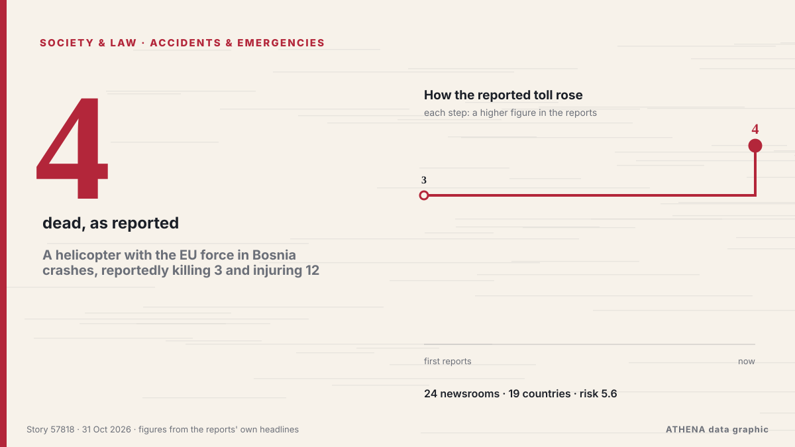

A helicopter with the EU force in Bosnia crashes, reportedly killing 3 and injuring 12

A Italian helicopter of the European Union peacekeeping force in Bosnia has crashed in the country’s north. von ABC News (International)
Unabhängig gemeldet von 24 Medien in 19 Ländern seit dem 29. Okt., zuerst von ANSA English; die Berichterstattung flaut ab. ATHENA stuft das Risiko als erhöht ein (5.6/10), vor allem wegen der Schwere des beschriebenen Schadens und seiner geografischen und sektoralen Reichweite. Die Konfidenz liegt bei 90 % (hoch): 24 Medien bestätigen es unabhängig, bei einer mittleren Verlässlichkeit der Quellen von 76 %. Medien nach Land: Italien (12), Türkei (5), Aserbaidschan (2). Berichterstattung: 29. Okt. bis 31. Okt., 34 Stunden.
Warum es wichtig ist: Rechtliche und politische Änderungen verändern Rechte, Pflichten und öffentliche Leistungen für die Betroffenen.
Was sich geändert hat: 12 neue Berichte von 8 Redaktionen in den 24 Stunden bis 31. Okt..
Erste Schlagzeile: Italian military helicopter crashes in Bosnia, 3 reported dead
Schlagzeilen werden auf Englisch angezeigt, wie veröffentlicht.
Auf einen Blick
Ausgewählt, bewertet und geschrieben nach der veröffentlichten Methodik von ATHENA. Kein Redakteur greift in einzelne Ereignisse ein. So entsteht ATHENA ›
| 29 Oct 17:07 UTC | 16 |
|---|---|
| 29 Oct 19:07 UTC | 3 |
| 29 Oct 21:07 UTC | 1 |
| 29 Oct 23:07 UTC | 3 |
| 30 Oct 01:07 UTC | 2 |
| 30 Oct 03:07 UTC | 2 |
| 30 Oct 05:07 UTC | 0 |
| 30 Oct 07:07 UTC | 4 |
| 30 Oct 09:07 UTC | 2 |
| 30 Oct 11:07 UTC | 1 |
| 30 Oct 13:07 UTC | 1 |
| 30 Oct 15:07 UTC | 0 |
| 30 Oct 17:07 UTC | 1 |
| 30 Oct 19:07 UTC | 0 |
| 30 Oct 21:07 UTC | 0 |
| 30 Oct 23:07 UTC | 0 |
| 31 Oct 01:07 UTC | 1 |
| 29 Oct 17:19 UTC | 3.9 |
|---|---|
| 29 Oct 17:35 UTC | 3.0 |
| 29 Oct 17:40 UTC | 5.7 |
| 29 Oct 21:31 UTC | 6.3 |
| 30 Oct 07:46 UTC | 5.7 |
| 31 Oct 03:01 UTC | 5.6 |
Warum diese Zahlen
Bedeutung
Risiko
Konfidenz
Die Berichterstattung – wer berichtete, und wann
Schlagzeile wie veröffentlicht · öffnet das Original- ANSA English · ItalienItalian military helicopter crashes in Bosnia
- ANSA English · ItalienItalian military helicopter crashes in Bosnia
- TASS (English) · RusslandThree people killed in EUFOR helicopter crash in Bosnia and Herzegovina
- APA (English) · AserbaidschanAt least ‘three killed’ as EUFOR helicopter crashes in Bosnia and Herzegovina
- The Straits Times · SingapurAt least four killed as Italian helicopter on EU peacekeeping mission crashes in Bosnia
- ANSA English · ItalienItalian military helicopter crashes in Bosnia, 3 feared dead
- ANSA English · ItalienItalian military helicopter crashes in Bosnia, 3 feared dead
- ANSA English · ItalienItalian military helicopter crashes in Bosnia, 3 reported dead
- ANSA English · ItalienItalian military helicopter crashes in Bosnia, 3 reported dead
- Anadolu Agency (English) · TürkeiEUFOR helicopter crashes in Bosnia, killing 3, injuring 12
- ANSA English · Italien3 reported dead in Italian military helicopter crash in Bosnia
- ANSA English · Italien3 reported dead in Italian military helicopter crash in Bosnia
- TRT World · TürkeiThree reportedly dead, 12 injured as EU peacekeeping helicopter crashes in Bosnia
- Türkiye Today · TürkeiThree reported dead as Italian EU force helicopter goes down in Bosnia
- Times of India · Indien4 killed, 11 injured as Italian Chinook helicopter crashes in Bosnia
- ABC News (International) · Vereinigte StaatenA helicopter with the EU force in Bosnia crashes, reportedly killing 3 and injuring 12
- The Independent · Vereinigtes KönigreichFour dead as Italian military helicopter crashes during EU mission in Bosnia
- Cyprus Mail · ZypernAt least four killed as Italian helicopter in EU mission in Bosnia crashes
- RTÉ News · IrlandEU force helicopter crash in Bosnia kills four crew
- New Straits Times · Malaysia4 killed, 11 injured as helicopter with EU force crashes in Bosnia
- The Jerusalem Post · IsraelAt least four killed, 11 injured after Italian helicopter crashes during EU mission in Bosnia
- Gulf News · Vereinigte Arabische EmirateEU force helicopter crash in Bosnia kills four Italians
- Al Jazeera English · KatarEU force helicopter crash kills four in Bosnia
- NDTV · Indien4 EU Force Members Killed As Peacekeeping Helicopter Crashes In Bosnia
- Ada Derana · Sri LankaA helicopter with the EU force in Bosnia crashes, killing 4 and injuring 11
- FBC News · FidschiFour killed in crash of Italian helicopter on EU mission in Bosnia
- Express Tribune · PakistanFour killed, 11 injured in Italian military helicopter crash in Bosnia, Herzegovina
- AzerNews · AserbaidschanFour Italian military personnel killed in helicopter crash in Bosnia and Herzegovina
- Anadolu Agency (English) · Türkei4 killed, 11 injured in Italian military helicopter crash in Bosnia and Herzegovina
- ANSA English · ItalienFour victims of Italian helicopter crash in Bosnia named
- ANSA English · ItalienFour victims of Italian helicopter crash in Bosnia named
- ANSA English · ItalienMeloni pays tribute to victims of Italian military helicopter crash in Bosnia
- ANSA English · ItalienMeloni pays tribute to victims of Italian military helicopter crash in Bosnia
- Euractiv · BelgienEU mourns four Italians killed in EUFOR Bosnia mission crash
- News of Bahrain · BahrainBosnia Declares Day of Mourning After Deadly EUFOR Helicopter Crash
- Anadolu Agency (English) · TürkeiTürkiye extends condolences after Italian military helicopter crash in Bosnia
- Free Malaysia Today · MalaysiaUN Security Council renews Bosnia peacekeeping force